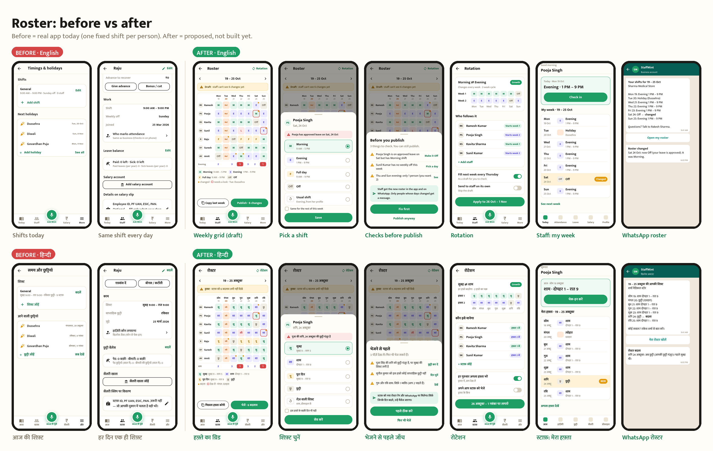
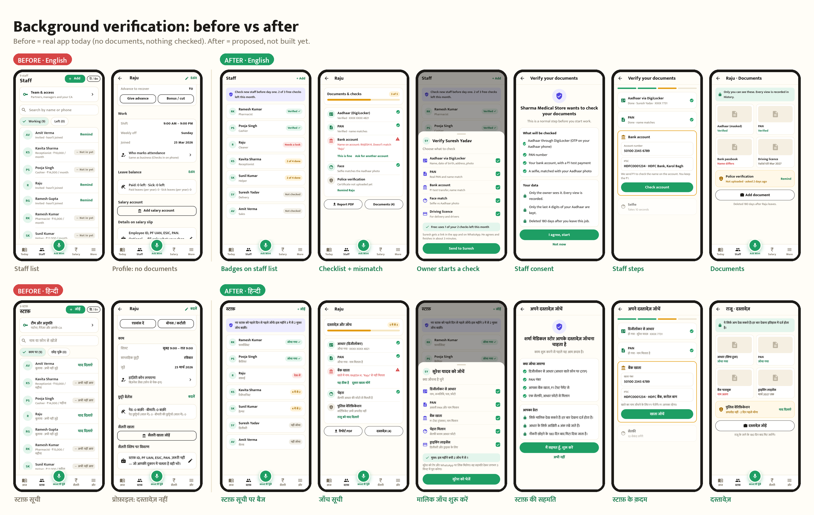
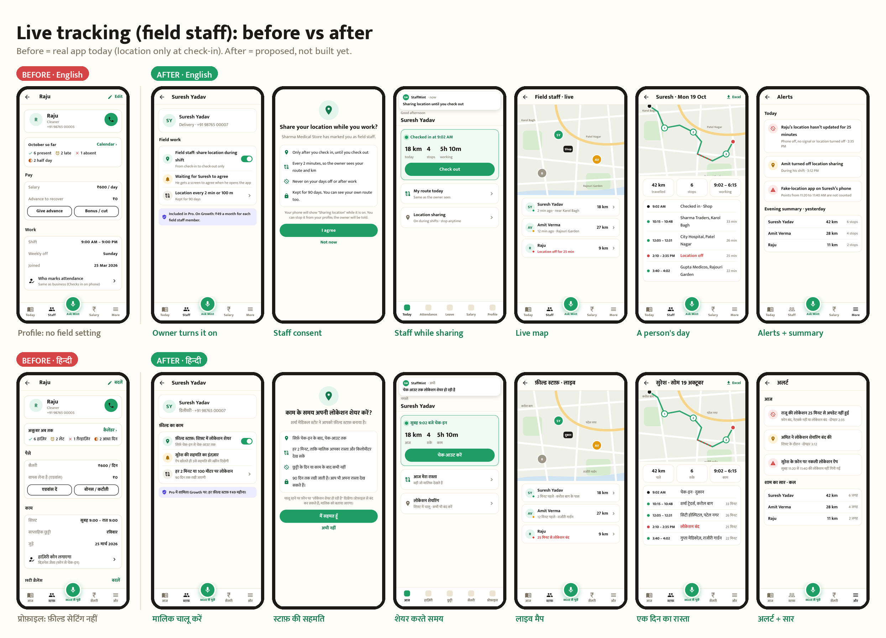

Roster, background verification, live tracking: before vs after
Round 0 of the plan. Before = real screenshots of the app today. After = proposed screens, not built yet. English and Hindi.
1 · Roster

- Weekly grid (Staff → Roster): a shift or Off for each person and day, the holiday column marked, changed cells dotted, and an evening headcount per day in red when low.
- Draft until published. "Copy last week", then Publish · 6 changes.
- Tap a cell to pick Morning, Evening, Full day, Off or the usual shift. It warns if the person has approved leave that day.
- Checks before publishing: leave clashes, no weekly off, too few people on a shift. You can still publish.
- Rotation (Growth): Morning ⇄ Evening every week, each person with a starting week, and next week filled every Thursday.
- Staff: today's shift on the home card, "My week" with changed days highlighted, and a WhatsApp roster message plus a change notice.
2 · Background verification

- Badges on the staff list: Verified ✓, 2 of 4 done, Needs a look, Not checked. The banner shows the free checks left this month (Growth 3, Pro 10, then ₹149 per staff).
- Checklist per staff member: Aadhaar via DigiLocker (last 4 digits only), PAN, bank (₹1 test), face, police certificate. A name mismatch can be accepted with "This is fine" or answered with a request for another account.
- Owner starts a check by picking what to check. Staff get a link in the app or on WhatsApp.
- Staff consent in plain words (what is checked, who sees it, when it's deleted), then simple steps.
- Documents are private, every view is recorded, expiry dates are shown, and police certificate reminders are sent.
3 · Live tracking for field staff

- Owner turns on "Field staff" per person. Nothing is shared until the staff member agrees. Included in Pro; ₹49 per field staff per month on Growth.
- Staff consent: sharing happens only between check-in and check-out, never on days off, and is kept for 90 days. Staff can see their own route.
- While sharing: the phone shows "Sharing location until you check out", and the home card shows km and stops.
- Live map with last-seen colours, and a person's day: route, stops with place names and time, km, gaps where location was off, and an Excel export.
- Alerts: location not updating, sharing turned off, a fake-location app. Plus an evening km summary.